ARVESSA — Hai cảnh flagship, trước và sau
ARVESSA / ARCHITECTURE · VISION · EXPERIENCEHai cảnh, ba cách kiểm chứng.
Trái: ứng dụng baseline. Giữa: ảnh Cycles từ source Blender mới. Phải: mô hình GLB đang chạy trong ứng dụng. Ảnh offline không được dùng để chứng minh chất lượng render thời gian thực.
Chưa nghiệm thu photorealism — chưa mở rộng sản xuất.Hồ sơ nguồn, giấy phép và giới hạn · Phép đo trình duyệt
01 / Stillwater — đối chiếu REF-01
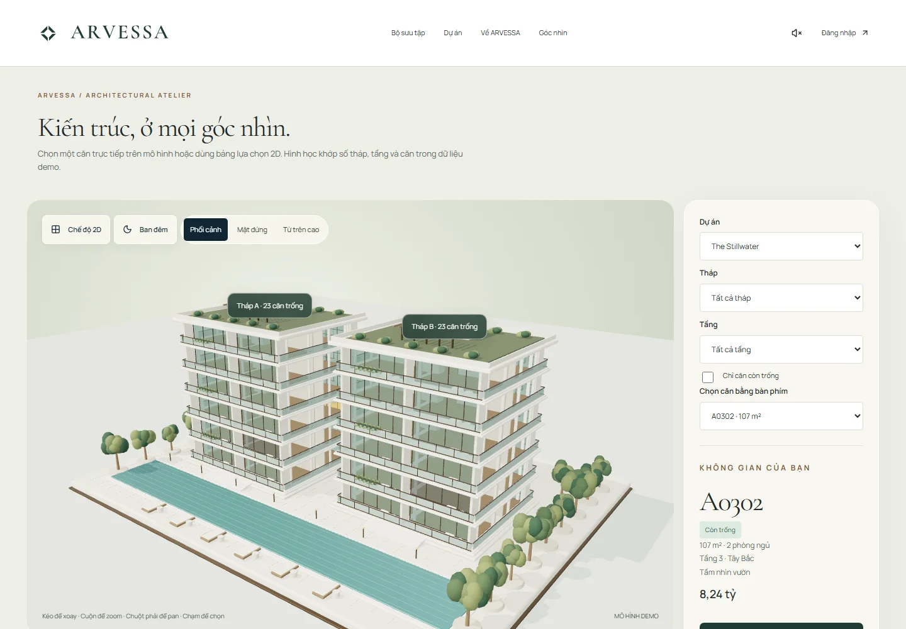
Trước / WebGLKhối kiến trúc và cây minh họa.
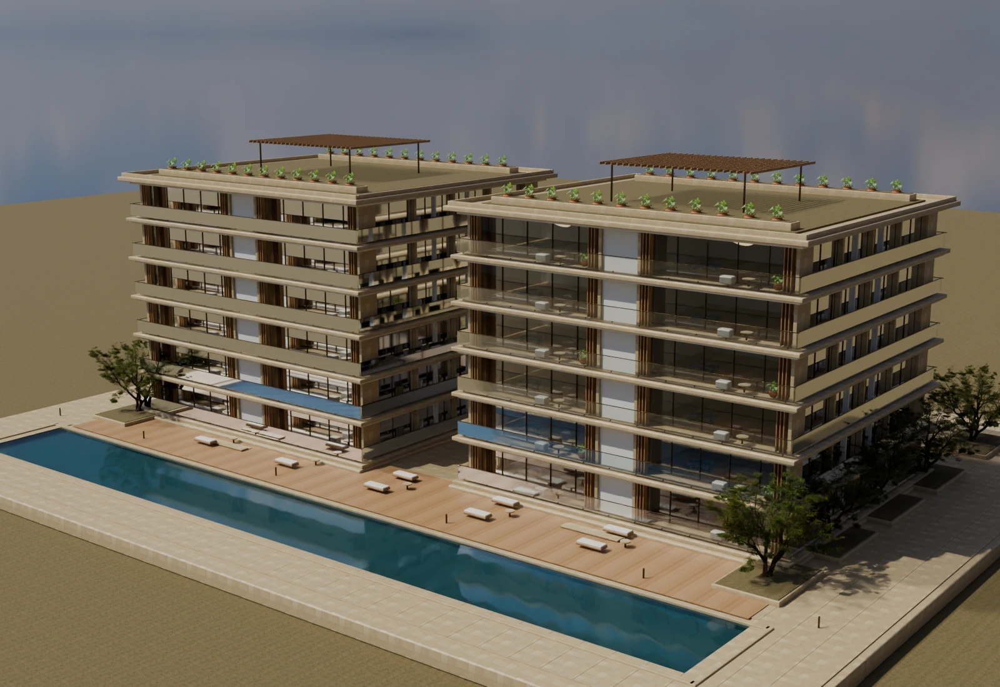
Sau / CyclesMặt đứng, vật liệu, phản xạ và cây nguồn thư viện.
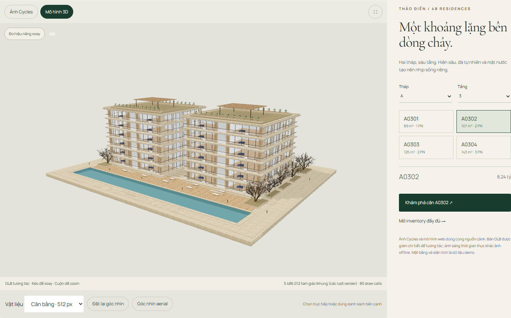
Sau / GLB tương tácGiảm chi tiết để tải web; tán cây và ánh sáng vẫn chưa đạt ảnh offline.
02 / A0302 — đối chiếu REF-05
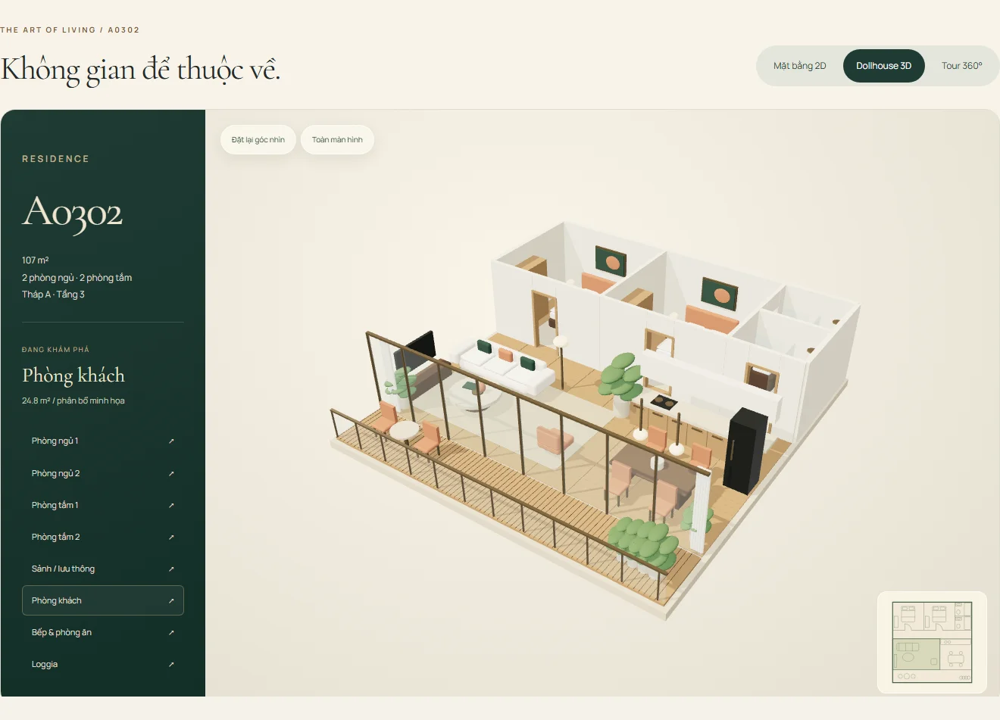
Trước / WebGLNội thất chủ yếu là khối minh họa.
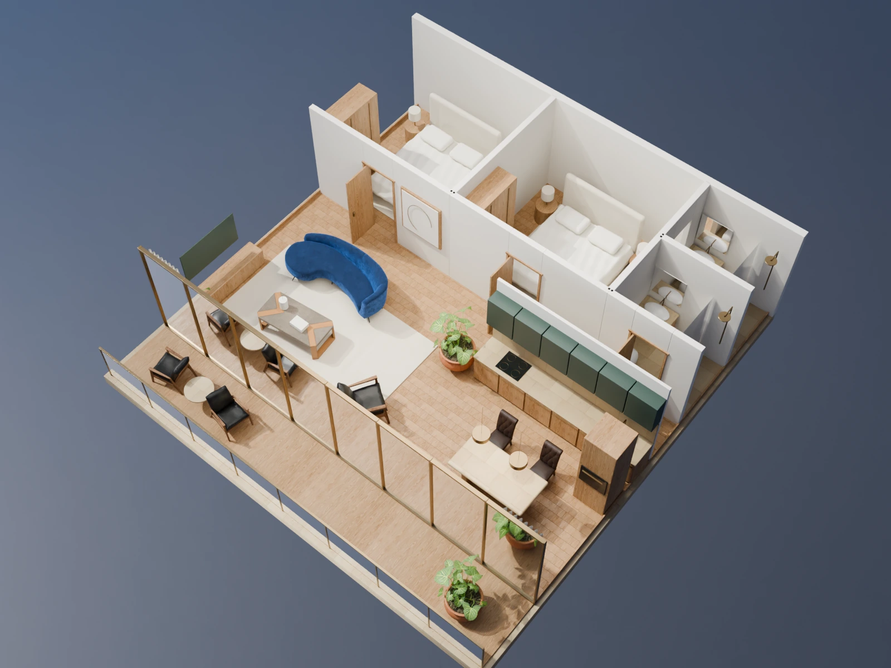
Sau / CyclesGóc cao cho thấy hai phòng ngủ. Sofa, bàn và ghế có vật liệu nguồn.
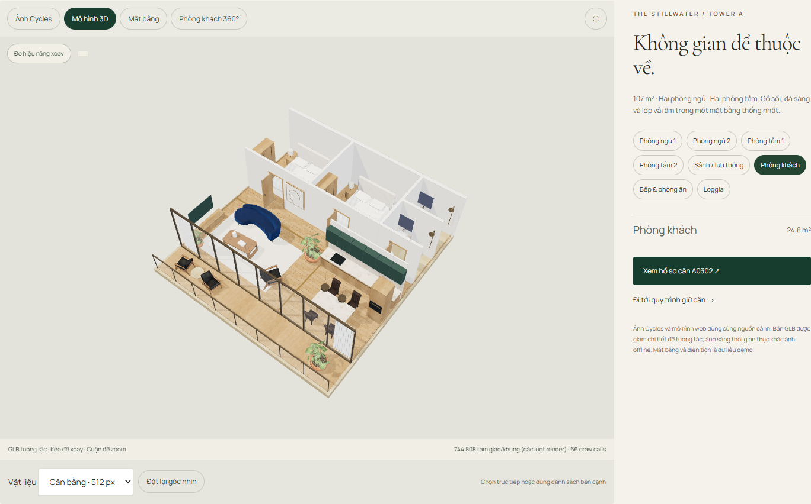
Sau / GLB tương tácChọn phòng trực tiếp; bố trí cùng nguồn với mặt bằng và panorama.
03 / Cảnh quan — đối chiếu REF-02
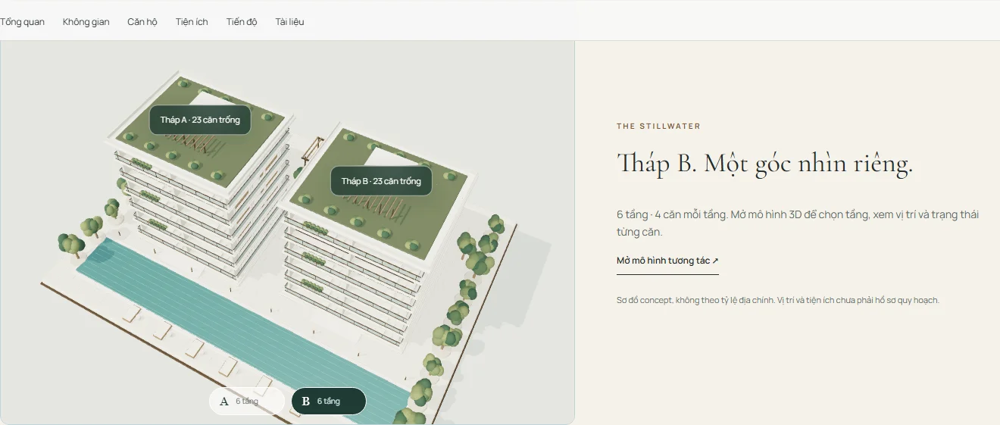
Trước / masterplan
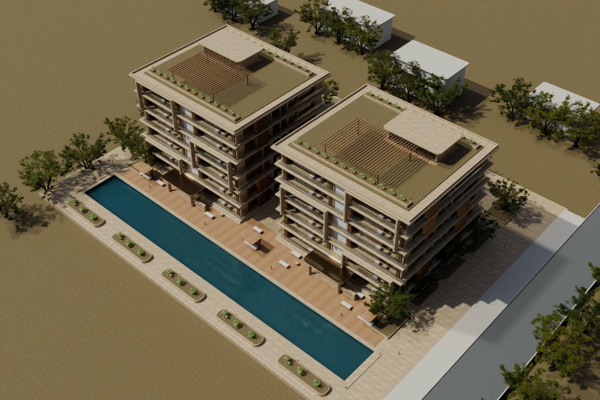
Sau / aerialSân, hồ và cây được render từ cùng scene. Chưa có bối cảnh đô thị hoàn chỉnh.
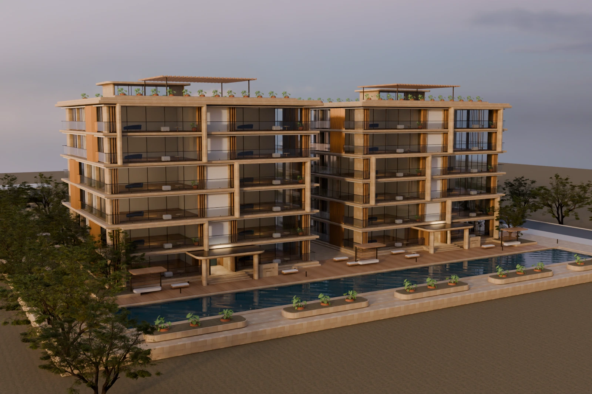
Sau / giờ vàngCùng hình học, đổi môi trường và ánh sáng kiến trúc.
04 / Sửa winding — kiểm tra kính trong panorama
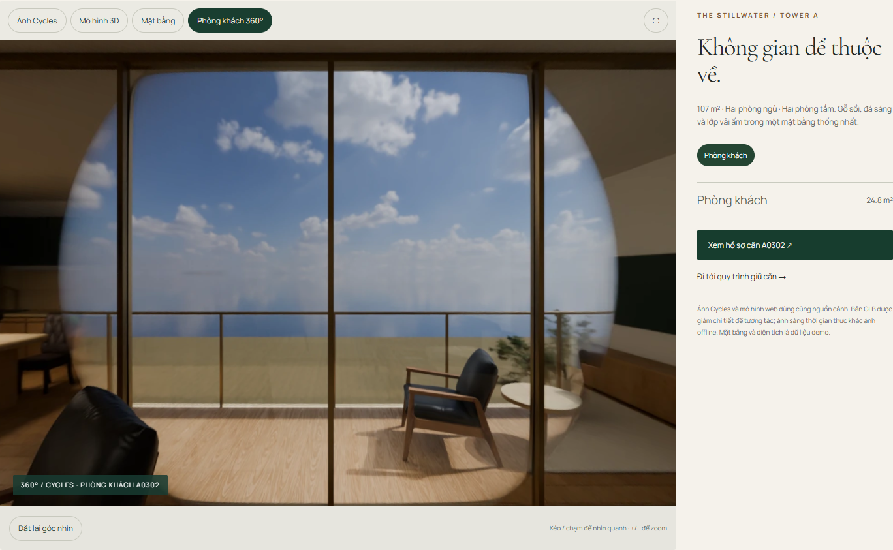
Trước sửaPhản xạ và khúc xạ sai do mặt khối quay vào trong.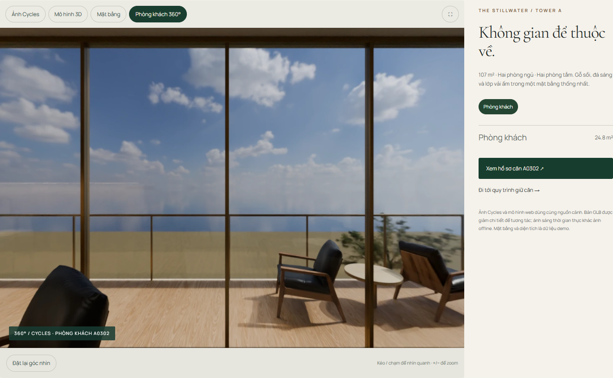
Sau sửa / panorama trong ứng dụngRender lại từ cùng source có mặt khối hướng ra ngoài. Bối cảnh ngoài cửa vẫn sơ lược.